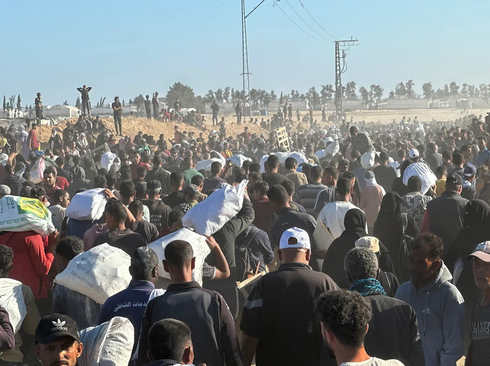
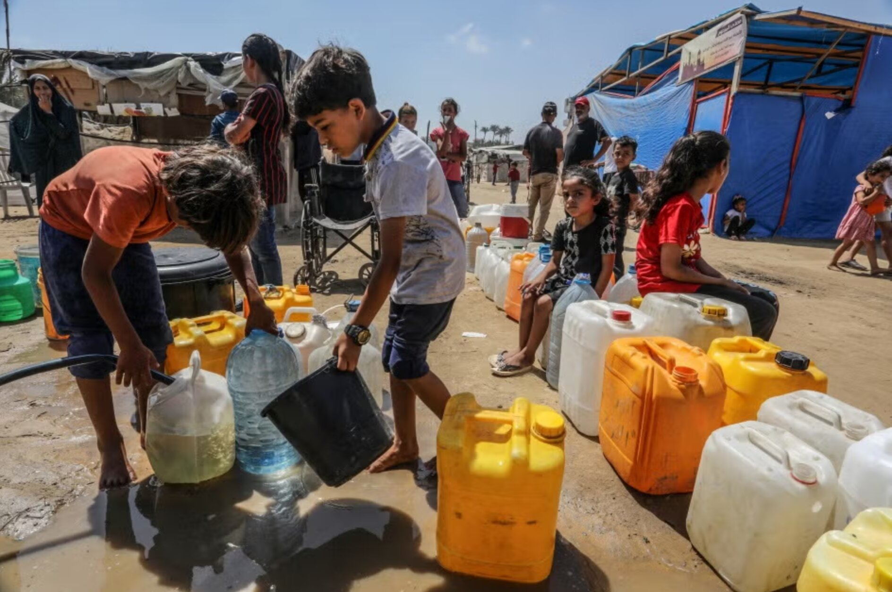
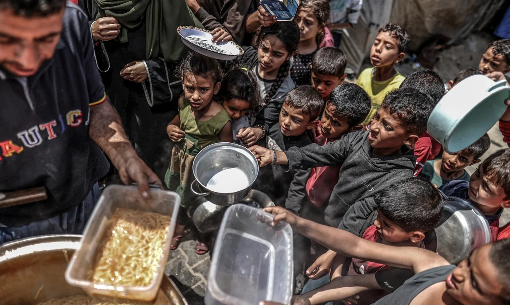

800,000
People with access to safe water
Planned access to sufficient, good-quality water for drinking and household needs.
An independent awareness page
For children in Gaza and beyond
Every child deserves warmth, food, care and safety.
Donations are completed on UNICEF’s official website. NOOR never collects money or payment details.
Beyond the headlines
Conflict disrupts the essentials of childhood: safe water, nutritious food, medical care, protection and learning. Reliable humanitarian updates can help us understand what is needed and where support is directed.



UNICEF'S 2026 APPEAL
UNICEF's 2026 Humanitarian Action for Children appeal sets planned targets across essential services for children and families in the State of Palestine. These are intended reach targets—not confirmed results already delivered.
800,000
Planned access to sufficient, good-quality water for drinking and household needs.
600,000
Planned access to primary health care at UNICEF-supported facilities.
436,000
Planned access to formal or non-formal education, including early learning.
591,800
Planned prevention education on landmines and other explosive weapons.
Source: UNICEF, State of Palestine Appeal — September 2026 revision. These are provisional planned targets for the State of Palestine, including Gaza and the West Bank, not Gaza-only figures; UNICEF may revise them.
Practical solidarity
Established humanitarian organizations coordinate aid on the ground. The priorities below are broad areas of support—not promises that a particular donation will purchase a specific item.
01 / WATER
Clean water, sanitation and hygiene help protect children from preventable disease.
Support the response ↗02 / NUTRITION
Food assistance and specialised nutrition support can help children and caregivers facing shortages.
Support the response ↗03 / HEALTH
Medical supplies, essential health services, child protection and psychosocial care all matter.
Support the response ↗Clear by design
NOOR is an independent awareness page. It does not collect donations, store payment details, issue receipts or represent UNICEF. When you choose to help, you leave this site and review the details on UNICEF’s official donation page.
Review UNICEF’s official appeal ↗Learn. Verify. Share.
Not able to donate? You can still help by sharing official updates, directing others to primary sources, and avoiding unverified figures or images shared without context. Always check a website's address before entering payment information.